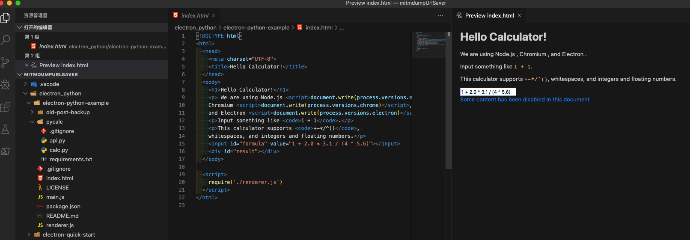
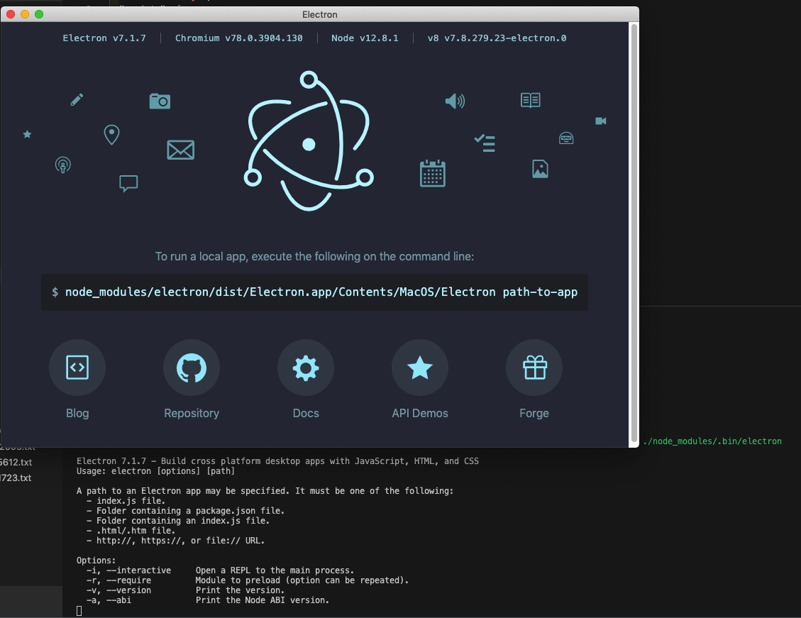
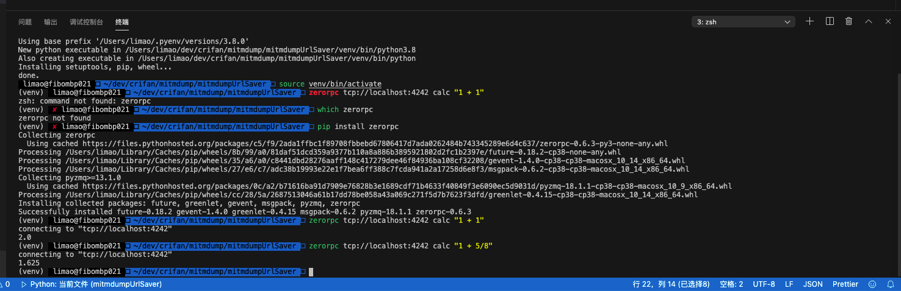
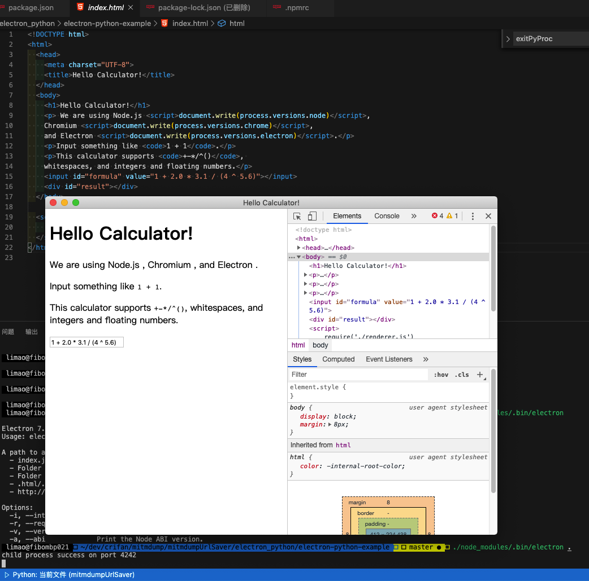
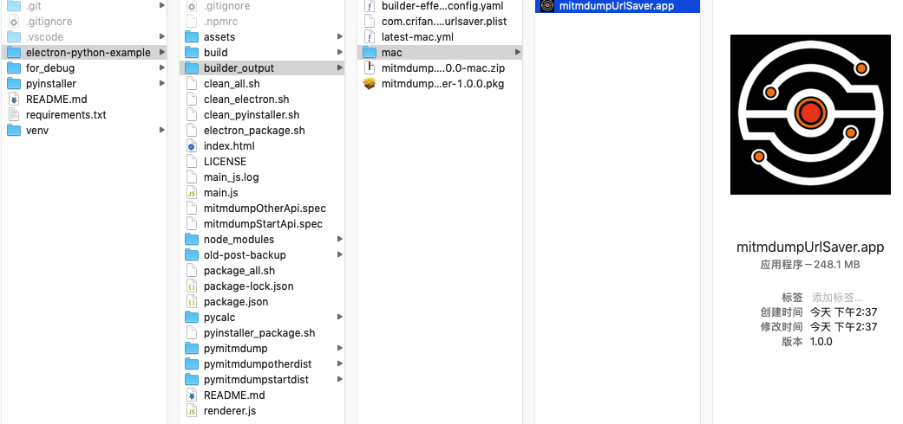
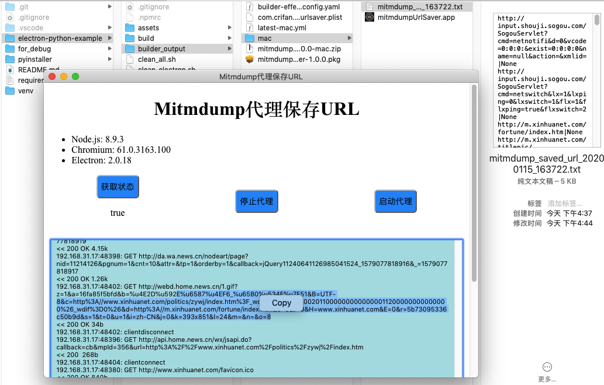

Electron对python支持
Electron本身官网并没有支持Python。
不过网上有人给出了可行的方案：
- 英文
- 中文翻译
下面介绍环境搭建的详细过程：
搭建能运行Python的Electron环境
下载代码
git clone https://github.com/fyears/electron-python-example.git
得到文件：
tree -CF
.
├── electron-python-example/
│ ├── LICENSE
│ ├── README.md
│ ├── index.html
│ ├── main.js
│ ├── old-post-backup/
│ │ ├── README.md
│ │ ├── hello.py
│ │ ├── main.js
│ │ └── package.json
│ ├── package.json
│ ├── pycalc/
│ │ ├── api.py
│ │ ├── calc.py
│ │ └── requirements.txt
│ └── renderer.js
└── electron-quick-start/
├── LICENSE.md
├── README.md
├── index.html
├── main.js
├── package-lock.json
├── package.json
├── preload.js
└── renderer.js
4 directories, 21 files
用VSCode打开，效果是：

初始化node环境
node要安装版本v8
之前：
brew install node
安装出的node是13.5.0，会导致后续编译electron有问题，所以需要换8.x版本的node：
brew install node@8
安装后使其生效：
把路径加到启动脚本的PATH中：
echo 'export PATH="/usr/local/opt/node@8/bin:$PATH"' >> ~/.zshrc
立刻生效：
source ~/.zshrc
安装后的版本是：
- node：
8.17.0 - npm:
6.13.4
根目录electron-python-example中：
创建文件.npmrc，内容为：
npm_config_target="2.0.18" # electron version
npm_config_runtime="electron" # 为elelctron编译
npm_config_disturl="https://atom.io/download/electron" # 资源下载地址
npm_config_build_from_source="true" # 从源码编译
以及配置文件：electron-python-example/package.json
{
"name": "pretty-calculator",
"version": "1.0.0",
"description": "A minimal Electron and Python - based calculator ",
"main": "main.js",
"scripts": {
"start": "electron ."
},
"repository": "https://github.com/fyears/electron-python-example",
"keywords": [
"Electron",
"Python",
"zerorpc",
"demo"
],
"author": "fyears",
"license": "MIT",
"dependencies": {
"zeromq": "^6.0.0-beta.6",
"zerorpc": "^0.9.8"
},
"devDependencies": {
"electron": "^2.0.18",
"electron-builder": "^21.2.0",
"electron-rebuild": "^1.8.8"
}
}
再去安装：
npm install
初始化Python开发环境
虚拟环境
此处Python的虚拟环境选择用：virtualenv
- 安装：
pip install virtualenv
- 新建：
virtualenv venv
- 进入：
source venv/bin/activate
安装依赖的库
安装负责js和python之间的通信的zerorpc：
pip install zerorpc
启动Electron
每次启动前最好清除缓存
根据作者解释，每次启动之前，最好去清除一下各种缓存，防止干扰：
rm -rf ~/.node-gyp
rm -rf ~/.electron-gyp
rm -rf ./node_modules
rm -f package-lock.json
启动electron
./node_modules/.bin/electron
界面效果：

测试zerorpc通信
再去测试zerorpc通信是否正常，Python代码是否可用：
打开某个终端去：
python pycalc/api.py
正常输出是：
start running on tcp://127.0.0.1:4242
再去另外一个终端：
virtualenv venv
source venv/bin/activate
zerorpc tcp://localhost:4242 calc "1 + 1"
正常输出：
connecting to "tcp://localhost:4242"
2.0

即表示zerorpc通信正常，js可以和Python代码交互了。
然后再去启动electron：
./node_modules/.bin/electron .
即可看到计算器的界面：

至此即在mac中跑通此处的electron-python-example了。
剩下的就是自己实现自己需要的逻辑和功能了。
打包和发布
在实现了自己的业务逻辑和功能后，再去打包和发布。
python的打包
先用PyInstaller打包：
cd electron-python-example
rm -rf build
rm -rf *.spec
rm -rf pymitmdumpstartdist
rm -rf pymitmdumpotherdist
pyinstaller pymitmdump/mitmdumpStartApi.py --distpath pymitmdumpstartdist --add-data "pymitmdump/mitmdump_executable:mitmdump_executable" --add-data "pymitmdump/mitmdumpUrlSaver.py:."
pyinstaller pymitmdump/mitmdumpOtherApi.py --distpath pymitmdumpotherdist
此处会生成的2个dist目录：
pymitmdumpstartdist- 二进制文件：
electron-python-example/pymitmdumpstartdist/mitmdumpStartApi/mitmdumpStartApi - 以及我们拷贝的：
- 整个目录：
electron-python-example/pymitmdumpstartdist/mitmdumpStartApi/mitmdump_executable - 单个py文件：
electron-python-example/pymitmdumpstartdist/mitmdumpStartApi/mitmdumpUrlSaver.py
- 整个目录：
- 二进制文件：
pymitmdumpotherdist- 二进制文件：
electron-python-example/pymitmdumpotherdist/mitmdumpOtherApi/mitmdumpOtherApi
- 二进制文件：
electron的打包
再去用electron-builder打包：
rm -rf builder_output
npm run dist
生成：
- app：
electron-python-example/builder_output/mac/mitmdumpUrlSaver.app- 
- app的zip压缩包：
electron-python-example/builder_output/mitmdumpUrlSaver-1.0.0-mac.zip - pkg：
electron-python-example/builder_output/mitmdumpUrlSaver-1.0.0.pkg- 注：Mac中安装后，但在应用程序中找不到对应的app。暂未深究，原因未知，肯能和code sign有关系。
运行
双击打包出来的app即可运行：

其他说明
package.json最新完整配置及说明
此处最后的package.json配置为：
{
"name": "MitmdumpUrlSaver",
"version": "1.0.0",
"description": "Use mitmdump proxy to save out url",
"main": "main.js",
"scripts": {
"start": "electron .",
"pack": "electron-builder --dir",
"dist": "electron-builder",
"dist_all": "electron-builder -mw"
},
"repository": "https://github.com/fyears/electron-python-example",
"keywords": [
"Electron",
"Python",
"zerorpc",
"mitmdump"
],
"author": "Crifan Li",
"license": "MIT",
"dependencies": {
"electron-context-menu": "^0.15.2",
"zeromq": "^6.0.0-beta.6",
"zerorpc": "^0.9.8"
},
"devDependencies": {
"electron": "^2.0.18",
"electron-builder": "^21.2.0",
"electron-rebuild": "^1.8.8"
},
"build": {
"productName": "mitmdumpUrlSaver",
"appId": "com.crifan.mitmdumpurlsaver",
"copyright": "Copyright © 2020 ${author} String",
"directories": {
"output": "builder_output"
},
"files": [
"**/*",
"!**/node_modules/*/{CHANGELOG.md,README.md,README,readme.md,readme}",
"!**/node_modules/*/{test,__tests__,tests,powered-test,example,examples}",
"!**/node_modules/*.d.ts",
"!**/node_modules/.bin",
"!**/*.{iml,o,hprof,orig,pyc,pyo,rbc,swp,csproj,sln,xproj}",
"!.editorconfig",
"!**/._*",
"!**/{.DS_Store,.git,.hg,.svn,CVS,RCS,SCCS,.gitignore,.gitattributes}",
"!**/{__pycache__,thumbs.db,.flowconfig,.idea,.vs,.nyc_output}",
"!**/{appveyor.yml,.travis.yml,circle.yml}",
"!**/{npm-debug.log,yarn.lock,.yarn-integrity,.yarn-metadata.json}",
"!build",
"!pymitmdump",
"!pycalc",
"!old-post-backup",
"!*.log",
"!*.txt",
"!*.md",
"!*.spec"
],
"asar": false,
"mac": {
"category": "public.app-category.developer-tools",
"type": "distribution",
"icon": "assets/icon/icon.icns",
"target": [
"pkg",
"zip"
]
},
"win": {
"target": "nsis",
"icon": "assets/icon/logo.png"
}
}
}
(1) file
其中
"**/*",
"!**/node_modules/*/{CHANGELOG.md,README.md,README,readme.md,readme}",
"!**/node_modules/*/{test,__tests__,tests,powered-test,example,examples}",
"!**/node_modules/*.d.ts",
"!**/node_modules/.bin",
"!**/*.{iml,o,hprof,orig,pyc,pyo,rbc,swp,csproj,sln,xproj}",
"!.editorconfig",
"!**/._*",
"!**/{.DS_Store,.git,.hg,.svn,CVS,RCS,SCCS,.gitignore,.gitattributes}",
"!**/{__pycache__,thumbs.db,.flowconfig,.idea,.vs,.nyc_output}",
"!**/{appveyor.yml,.travis.yml,circle.yml}",
"!**/{npm-debug.log,yarn.lock,.yarn-integrity,.yarn-metadata.json}",
是从官网 Application Contents - electron-builder 拷贝出来的默认的配置；
余下部分：
"!build",
"!pymitmdump",
"!pycalc",
"!old-post-backup",
"!*.log",
"!*.txt",
"!*.md",
"!*.spec"
是自己加的，用于排除此处不需要打包的文件。
(2) asar
asar参数默认是开启的，其会导致此处二进制可执行文件：
- mitmdumpUrlSaver.app/Contents/Resources/app/pymitmdumpstartdist/mitmdumpStartApi/mitmdumpStartApi
- 无法运行
- mitmdumpUrlSaver.app/Contents/Resources/app/pymitmdumpotherdist/mitmdumpOtherApi/mitmdumpOtherApi
- 可以运行
根本原因：未知
规避办法：只能去关闭掉asar：
"asar": false,
才能正常运行mitmdumpStartApi和mitmdumpOtherApi
更多细节
详见：
【已解决】Mac中运行跑通electron-python-example的示例